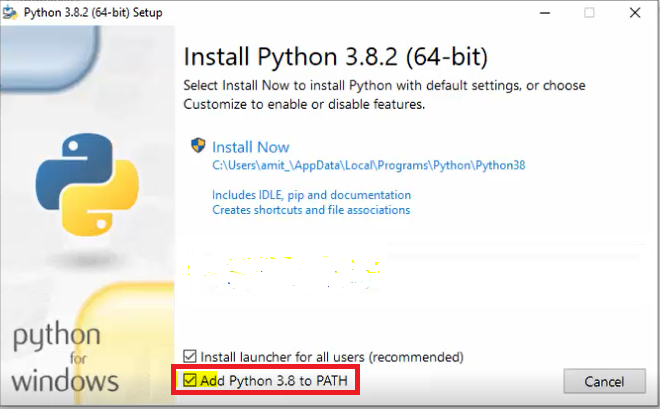
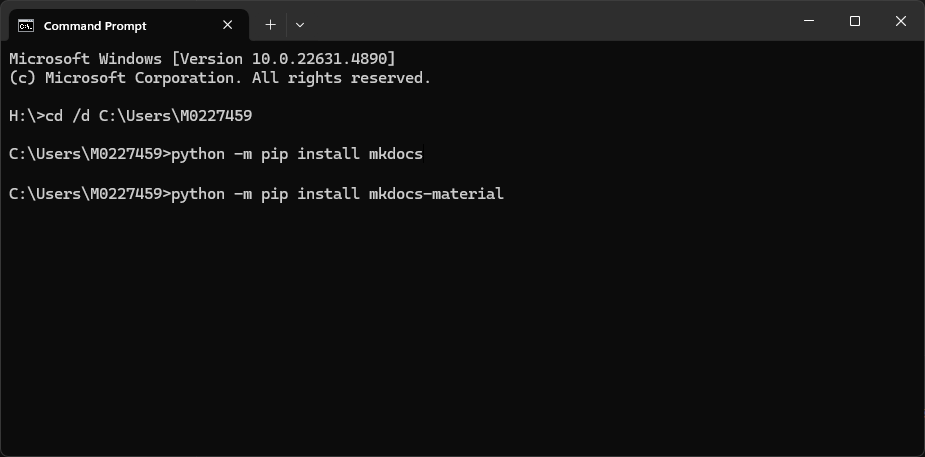
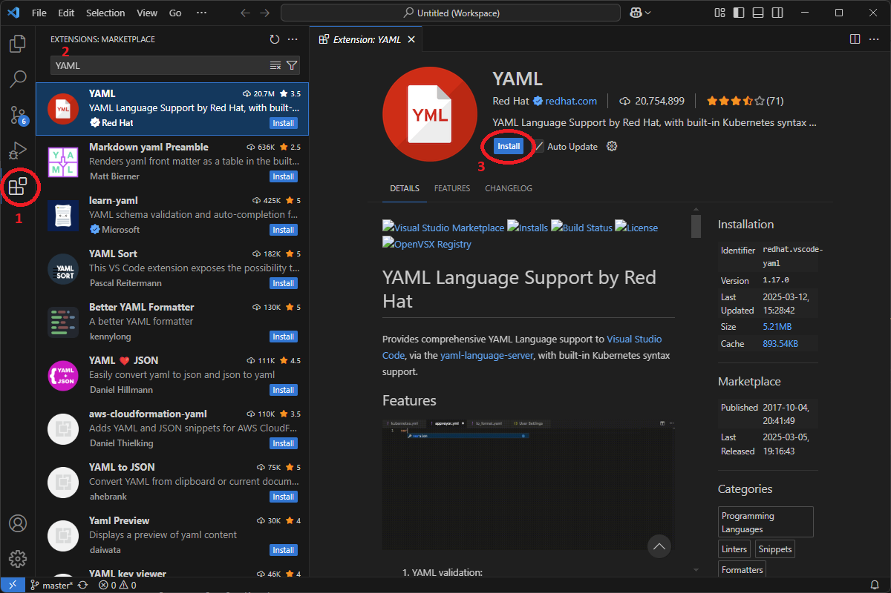

Start & Install🔗
Documentation is an important engineering practise which allows knowledge and processes to be stored in a safe and accessible format, which can then be used by future employees or projects.
This guide aims to show clearly and simply how to create, edit, sort and publish 'wiki-type' documentation sites for the C&C department using Material for Mkdocs.
Basic workflow for editing docs🔗
- Identify the documentation site, Clone the source files for it.
- Edit Markdown files
- Rebuild the site and copy it to a convenient server location
- Commit changes to the repository
Prerequisite Software🔗
Source Control🔗
This documentation system requires understanding and using Source Control. Information and installation guides are found on the source control documentation site.
Python🔗
Please install a version of Python 3. Ensure to select the box add Python to PATH. A setup file can also be found in MPT Share
Install: All Users is optional
There's no need to install for all users. This is optional.

MkDocs🔗
To install MkDocs, first open the command prompt (start>run>cmd). After each line, press Enter to execute.
Use Python pip to install MkDocs using:
and Material for MkDocs using:
If you see H: on the left
If your cmd prompt has H:\ on the left, this is a MAHLE IT registry issue. Type C: Enter, to get a C location. Python should be an environment variable (whole machine) and the install should work regardless of the active directory

Directory Access🔗
Write access is probably required to these locations. Unless you know better, please apply for access:
| Directory | Used for |
|---|---|
\\itc.global.mahle/nh-group/AFT Development Project |
Controls dept repositories, remote location. In AFT Development Project/Source Control/ |
\\itc.global.mahle/nh-group/PCC |
Published documentation in PCC/107. Training and user guides |
VS Code🔗
Not required but is the recommended MarkDown document editor. Install from Visual Studio Code or file available in MPT Share:
Once installed, search for YAML (by RedHat) in the extensions tab. Installation is recommended for its syntax highlighting.

Complete🔗
Move on to Setup if all prerequisites are installed successfully,